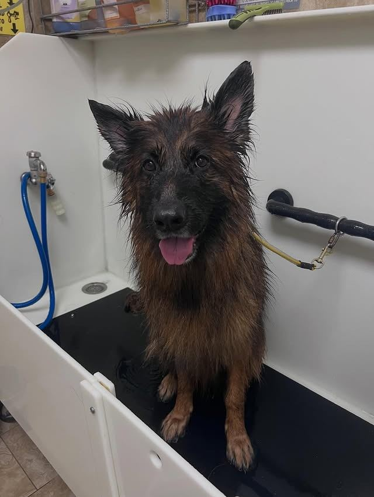

How to Keep a Clean Home With Pets: Pet Hair, Odors and Pet-Safe Products
Pets make a house a home, and they bring hair, odors and muddy paws with them. Here's how to keep up, room by room, with products that are safe for your pets.
Read the post